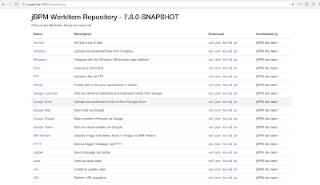
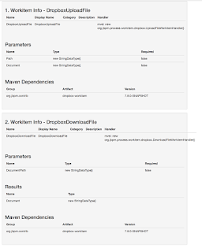
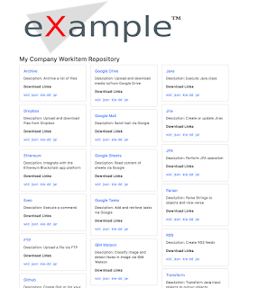

jBPM Work Items repository tips + tricks
In his previous post, Maciej showcased the updates to the jBPM Work Items module and how easy it is now to get up and running with creating new workitems and start using them in your business processes right away.
In this post I wanted to leverage on what Maciej showed and add a couple of cool features that the jBPM Work Item repository gives you out of the box, specifically related to the repository content generation.
1. Skinning
By default the work item repository generates static content including all workitem info, documentation and download links. Here is what they look like out of the box:
 |
| 1. Default repository index page |
 |
| 2. Default workitem documentation page |
Using the default look/feel is fine, but there are cases you might want to change it to fit your company/business better by changing the colors, adding your logo, or even completely change the layout of these pages and here is how you can do it.
 |
| 3) “Skinned” workitem repository index page |
<excludes>
<exclude>${project.groupId}:repository-springboot</exclude>
<exclude>${project.groupId}:archive-workitem</exclude>
<exclude>${project.groupId}:dropbox-workitem</exclude>
</excludes>
and those will not show up in the generated repository content any more.
3. Generating additional download content using workitem handler information
By default each workitem in the repository might have one or more handler implementations. Each handler describes itself via the @Wid annotation, here is an example handler for sending Twitter messages. During compilation step of your handlers repository gathers the info from this annotations and uses it to generate the workitem defintion configuration, the json config, the deployment descriptor xml, etc etc. You may want to generate additional configuration files that currently do not exist.
This can be configured in the main project's pom.xml file. Here you can add more or remove existing config files generated from the annotation information in your workitem handlers.
I hope this info will be of some help to you guys. As always if there are any questions or if you have ideas on how to further enhance the workitem repository feel free to ask.

{kind=link}
{kind=link}
{kind=link}